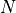

File Syntax, STAT module#
An ASCII file format is defined for each of the following object type of the STAT module:
type COMPOUND#
A compound (or stopped-sum) distribution is defined as the distribution of the sum of n independent and identically distributed random variables  where
where  is the value taken by the random variable
is the value taken by the random variable

. The distribution of is referred to as the sum distribution while the distribution of the is referred to as the elementary distribution. Consider the following example:
COMPOUND_DISTRIBUTION
SUM_DISTRIBUTION
NEGATIVE_BINOMIAL INF_BOUND : 5 PARAMETER : 3.2 PROBABILITY : 0.4
ELEMENTARY_DISTRIBUTION
BINOMIAL INF_BOUND : 0 SUP_BOUND : 5 PROBABILITY : 0.8
you can load this data by using
>>> compound = Compound('doc/user/syntax_compound.dat')
The first line gives the distribution type. The parametric sum distribution and the parametric elementary distribution are then defined in subsequent lines according to the syntactic form defined for the type DISTRIBUTION.
type CONVOLUTION#
The distribution of the sum of independent random variables is the convolution of the distributions of these elementary random variables. Consider the following example:
CONVOLUTION 2 DISTRIBUTIONS
DISTRIBUTION 1
BINOMIAL INF_BOUND : 2 SUP_BOUND : 5 PROBABILITY : 0.8
DISTRIBUTION 2
NEGATIVE_BINOMIAL INF_BOUND : 5 PARAMETER : 3.2 PROBABILITY : 0.4
you can load this data by using
>>> convolution = Convolution('doc/user/syntax_convolution.dat')
The first line gives the distribution type and the number of elementary distributions (2 or 3). The elementary parametric distributions are then defined in subsequent lines according to the syntactic form defined for the type DISTRIBUTION.
type DISTRIBUTION, type RENEWAL#
The available parametric discrete distributions are the binomial distribution, the Poisson distribution, the negative binomial distribution and the uniform (rectangular) distribution with an additional shift parameter which defines the lower bound to the range of possible values. The name of the distribution is first given, then the name of each parameter followed by its actual value as shown in the following examples:
BINOMIAL INF_BOUND : 2 SUP_BOUND : 5 PROBABILITY : 0.8
#POISSON INF_BOUND : 0 PARAMETER : 12.2
#NEGATIVE_BINOMIAL INF_BOUND : 5 PARAMETER : 3.2 PROBABILITY : 0.4
#UNIFORM INF_BOUND : 2 SUP_BOUND : 5
you can load this data by using
>>> binomial = Distribution('doc/user/syntax_distribution.dat')
INF_BOUND and SUP_BOUND are integer-valued parameters while PARAMETER and PROBABILITY are real-valued parameters.
For every parametric distributions, the following constraint applies to the shift parameter: 0 ≤ INF_BOUND ≤ 200
For a BINOMIAL or a UNIFORM distribution, the following constraint applies to the parameters INF_BOUND and SUP_BOUND which define the range of possible values: 0 < SUP_BOUND - INF_BOUND ≤ 500
For a BINOMIAL distribution, the following constraint applies to the probability of ‘success’: 0 ≤ PROBABILITY ≤ 1
For a POISSON distribution, the following constraint applies to the parameter (which is equal to the mean): 0 < PARAMETER _ 200
For a NEGATIVE_BINOMIAL distribution, the following constraints apply to the parameters: 0 < PARAMETER 0 < PROBABILITY < 1 PARAMETER (1 - PROBABILITY) / PROBABILITY ≤ 200.
Pour une loi de type UNIFORM, les contraintes suivantes sur les paramètres doivent être respectées : 0 _ SUP_BOUND - INF_BOUND _ 500
A renewal process is built from a discrete parametric distribution (BINOMIAL, POISSON or NEGATIVE_BINOMIAL) termed the inter-event distribution which represents the time interval between consecutive events. Hence, the types DISTRIBUTION and RENEWAL share the same ASCII file format.
type HISTOGRAM#
The syntactic form of the type HISTOGRAM consists in giving, in a first column, the values in increasing order and, in a second column, the corresponding frequencies. If a value is not given, the corresponding frequency is assumed to be null. Consider the following example:
2 1
3 2
4 4
5 12
6 14
7 6
8 3
9 2
10 1
12 2
14 1
you can load this data by using
>>> histogram = Histogram('doc/user/syntax_histogram.dat')
type MIXTURE#
A mixture is a parametric model of classification where each elementary distribution or component represents a class with its associated weight. Consider the following example:
MIXTURE 2 DISTRIBUTIONS
DISTRIBUTION 1 WEIGHT : 0.3
BINOMIAL INF_BOUND : 2 SUP_BOUND : 5 PROBABILITY : 0.8
DISTRIBUTION 2 WEIGHT : 0.7
NEGATIVE_BINOMIAL INF_BOUND : 5 PARAMETER : 3.2 PROBABILITY : 0.4
The first line gives the distribution type and the number of components of the mixture (between 2 and 4). The components are then defined on two lines, the first one giving the associated weight and the second one giving the definition of the elementary parametric distribution according to the syntactic form defined for the type DISTRIBUTION. The weights should sum to one.
VECTOR_DISTANCE#
The parameters of definition of a distance between vectors are the number of variables, the distance type (ABSOLUTE_VALUE or QUADRATIC) if there is more than one variable, the variable types (NUMERIC, SYMBOLIC, ORDINAL or CIRCULAR), and eventually the weights of the variables (default behaviour: the variables have the same weight), and in the symbolic case, explicit distances between symbols (default behaviour: 0 / 1 for mismatch / match). Consider the following example:
4 VARIABLES
DISTANCE : ABSOLUTE_VALUE
VARIABLE 1 : NUMERIC WEIGHT : 0.4
VARIABLE 2 : ORDINAL WEIGHT : 0.2
VARIABLE 3 : SYMBOLIC WEIGHT : 0.2
VARIABLE 4 : SYMBOLIC WEIGHT : 0.2
4 SYMBOLS
0
1 0
1 1 0
2 2 2 0
you can load this data by using
>>> vector_distance = VectorDistance('doc/user/syntax_vector_distance.dat')
VECTORS#
Warning
Check this example and data files which can do be loaded.
In the syntactic form of the type VECTORS, each row corresponds to an individual and each column corresponds to a variable. Consider the following example:
3 VARIABLES
0 1 20
1 2 96
0 4 152
1 12 218
0 14 42
0 6 57
1 3 111
1 2 172
1 1 154
0 2 31
1 1 139
you can load this data by using
>>> vector = Vectors('doc/user/syntax_vectors.dat')